\begin{align*} \amp \text{Pythagorean identity} \amp\amp \sin^2 \theta + \cos^2 \theta = 1\\ \amp \text{Tangent identity} \amp\amp \tan \theta = \dfrac{\sin \theta}{\cos \theta}\\ \end{align*}
Section 8.1 Sum and Difference Formulas
¶In Chapter 5 we studied identities that relate the three trigonometric functions sine, cosine, and tangent.
If we know one of the three trig values for an angle, we can find the other two by using these identities. Identities are useful for changing from one form to another when solving equations, and for finding exact values for trigonometric functions.
Are there identities relating the trig ratios of different angles? For example, if we know the sine of \(27\degree\text{,}\) can we find the sine of \(2(27\degree)=54\degree\) without using a calculator? Or, if we know \(\cos \alpha\) and \(\cos \beta\text{,}\) can we calculate \(\cos (\alpha + \beta)\text{?}\)
Subsection The Sum of Angles Identities
All of the identities that relate the trig ratios of different angles are derived from the sum and difference formulas. Let's see why we need these formulas.
Is it true that
\begin{equation*}
\cos (\alpha + \beta)~~~~\text{and}~~~~\cos \alpha + \cos \beta
\end{equation*}
are equal for any values of \(\alpha\) and \(\beta\) ? We can test this hypothesis by evaluating both expressions for some specific values of \(\alpha\) and \(\beta\text{,}\) say \(\alpha=45\degree\) and \(\beta=30\degree\text{,}\) as shown below.
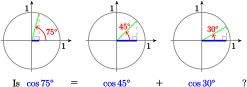
From the figure, you should be able to see that \(\cos 75\degree\) is in fact smaller than either \(\cos 45\degree\) or \(\cos 30\degree\text{,}\) so it cannot be true that \(\cos 75\degree\) is equal to \(\cos 45\degree + \cos 30\degree\text{.}\)
Example 8.1
Verify that \(\cos (45\degree + 30\degree)\) is not equal to \(\cos 45\degree + \cos 30\degree\text{.}\)
Solution
Use your calculator to evaluate each expression. \begin{align*} \cos (45\degree + 30\degree) \amp = \cos 75\degree = 0.2588\\ \text{but} \cos 45\degree + \cos 30\degree \amp = 0.7071 + 0.8660 = 1.5731\\ \end{align*} The two expressions are not equal.
Checkpoint 8.2
Show that \(\sin(60\degree + 30\degree)\) is not equal to \(\sin 60\degree + \sin 30\degree\text{.}\)
Answer
\(\sin(60\degree + 30\degree)=1\text{,}\) but \(\sin 60\degree + \sin 30\degree = \dfrac{\sqrt{3}}{2} + \dfrac{1}{2}\)
Caution 8.3
Because the values of the expressions in Example 1 and in Exercise 1 are different, it is not true that \(\cos (\alpha + \beta)\) is equal to \(\cos \alpha + \cos \beta\) for all angles \(\alpha\) and \(\beta\text{,}\) or that \(\sin (\alpha + \beta)\) is equal to \(\sin \alpha + \sin \beta\text{.}\)
It turns out that there is a relationship between the trig ratios for \(\alpha + \beta\) and the trig ratios of \(\alpha\) and \(\beta\text{,}\) but it is a little more complicated.
Sum of Angles Identities
\begin{equation*}
\cos (\alpha + \beta) = \cos \alpha \cos \beta - \sin \alpha \sin \beta
\end{equation*}
\begin{equation*}
\sin (\alpha + \beta) = \sin \alpha \cos \beta + \cos \alpha \sin \beta
\end{equation*}
Notice that to find the sine or cosine of \(\alpha + \beta\) we must know (or be able to find) both trig ratios for both and \(\alpha\) and \(\beta\text{.}\)
The sum and difference formulas can be used to find exact values for trig ratios of various angles.
Example 8.4
Find an exact value for \(\cos 105\degree\text{.}\)
Solution
We can write \(105\degree\) as the sum of two special angles: \(105\degree = 60\degree + 45\degree\text{.}\) Now apply the addition formula for cosine. \begin{align*} \cos (60\degree + 45\degree) \amp = \cos 60\degree \cos 45\degree - \sin 60\degree \sin 45\degree\\ \amp = \dfrac{1}{2} \dfrac{\sqrt{2}}{2}-\dfrac{\sqrt{3}}{2} \dfrac{\sqrt{2}}{2} = \dfrac{\sqrt{2}-\sqrt{6}}{4}\\ \end{align*} Thus, \(\cos 105\degree = \dfrac{\sqrt{2}-\sqrt{6}}{4}\text{.}\) You can check that your calculator gives the same decimal approximation of about \(-0.2588\) for both \(\cos 105\degree\) and \(\dfrac{\sqrt{2}-\sqrt{6}}{4}\text{.}\)
Checkpoint 8.5
Find an exact value for \(\sin 75\degree\text{.}\)
Answer
\(\dfrac{\sqrt{6}+\sqrt{2}}{4}\)
Of course, the sum formulas hold for angles in radians as well as degrees.
Example 8.6
Suppose that \(\sin \theta = 0.6\) and \(\cos \theta = -0.8\text{.}\) Find an exact value for \(\sin(\theta + \dfrac{2\pi}{3})\text{.}\)
Solution
Recall that \(\sin \dfrac{2\pi}{3} = \dfrac{\sqrt{3}}{2}\) and \(\cos \dfrac{2\pi}{3} = \dfrac{-1}{2}\text{.}\) Substituting these values into the sum formula for sine, we find \begin{align*} \sin(\theta + \dfrac{2\pi}{3}) \amp = \sin \theta \cos \dfrac{2\pi}{3} +\cos \theta \sin \dfrac{2\pi}{3}\\ \amp = 0.6 (\dfrac{-1}{2}) +(-0.8)(\dfrac{\sqrt{3}}{2})\\ \amp = \dfrac{3}{5} \cdot \dfrac{-1}{2} + \dfrac{-4}{5} \cdot \dfrac{\sqrt{3}}{2} = \dfrac{-3-4\sqrt{3}}{10}\\ \end{align*}
Activity 8.1 Negative Angles
I Using Reference Triangles
- Suppose that \(\theta\) is a first-quadrant angle. In which quadrant would you find \(-\theta\text{?}\)
- Sketch an example for \(\theta\text{,}\) \(-\theta\text{,}\) and the reference triangle for each.
- How is \(\sin (-\theta)\) related to \(\sin \theta\text{?}\) What about \(\cos (-\theta)\) and \(\tan (-\theta)\text{?}\)
- Repeat part (1) for the case where is a second-quadrant angle.
II Using Graphs
-
Look at the graph of \(f(\theta) = \sin \theta\text{,}\) and choose three positive values of \(\theta\text{.}\) Draw dots on the graph that show their function values.
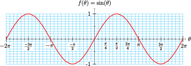 - Find the negatives of your three values of \(\theta\) from part (a), and draw dots to show their function values.
- How do the values of \(\sin (-\theta)\) compare to the values of \(\sin \theta\text{?}\)
-
-
Repeat part (1) for the graph of \(f(\theta) = \cos \theta\text{.}\)
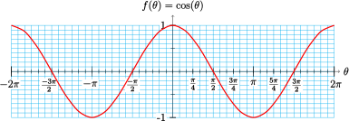 -
Repeat part (1) for the graph of \(f(\theta) = \tan \theta\text{.}\)
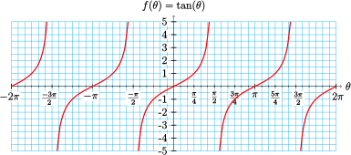
III Negative Angle Identities
State your conclusions from parts I and II as identities:
\begin{equation*}
\sin (-\theta) =
\end{equation*}
\begin{equation*}
\cos (-\theta) =
\end{equation*}
\begin{equation*}
\tan (-\theta) =
\end{equation*}
Checkpoint 8.7
Suppose that \(\sin \theta = \dfrac{-5}{13}\) and \(\cos \theta = \dfrac{12}{13}\text{.}\) Find an exact value for \(\cos\left(\dfrac{\pi}{4} + \theta\right)\text{.}\)
Answer
\(\dfrac{17}{13\sqrt{2}} = \dfrac{17\sqrt{2}}{26}\)
Subsection The Difference of Angles Identities
The difference formulas for sine and cosine can be derived easily from the sum formulas, using the identities for negative angles. Note that the difference formulas are identical to the corresponding sum formulas, except for the signs.
Difference of Angles Identities
\begin{equation*}
\cos (\alpha - \beta) = \cos \alpha \cos \beta + \sin \alpha \sin \beta
\end{equation*}
\begin{equation*}
\sin (\alpha - \beta) = \sin \alpha \cos \beta - \cos \alpha \sin \beta
\end{equation*}
Example 8.8
Use the fact that \(\dfrac{\pi}{12} = \dfrac{\pi}{4} - \dfrac{\pi}{6}\) to evaluate \(\cos \dfrac{\pi}{12}\) exactly.
Solution
Remember that \(\cos \dfrac{\pi}{4} = \dfrac{\sqrt{2}}{2},~~\cos\dfrac{\pi}{6} =\dfrac{\sqrt{3}}{2},~~\sin\dfrac{\pi}{4} = \dfrac{\sqrt{2}}{2}\text{,}\) and \(\sin \dfrac{\pi}{6} = \dfrac{1}{2}\text{.}\) Substituting all these values into the difference formula for cosine, we obtain the following. \begin{align*} \cos\dfrac{\pi}{12} \amp = \cos (\dfrac{\pi}{4} - \dfrac{\pi}{6})\\ \amp = \cos \dfrac{\pi}{4} \cos \dfrac{\pi}{6} + \sin \dfrac{\pi}{4} \sin \dfrac{\pi}{6}\\ \amp = \dfrac{\sqrt{2}}{2} \cdot \dfrac{\sqrt{3}}{2} +\dfrac{\sqrt{2}}{2} \cdot \dfrac{1}{2}\\ \amp = \dfrac{\sqrt{6}+\sqrt{2}}{4}\\ \end{align*} You can check that your calculator gives the same decimal approximation of about 0.9659 for both \(\cos \dfrac{\pi}{12}\) and \(\dfrac{\sqrt{6}+\sqrt{2}}{4}\text{.}\)
Checkpoint 8.9
Evaluate \(\sin \dfrac{\pi}{12}\) exactly.
Answer
\(\dfrac{\sqrt{3}-1}{2\sqrt{2}} = \dfrac{\sqrt{6}-\sqrt{2}}{4}\)
Subsection Sum and Difference Identities for Tangent
There are also sum and difference formulas for the tangent.
Sum and Difference Identities for Tangent
\begin{equation*}
\tan (\alpha + \beta) = \dfrac{\tan \alpha + \tan \beta}{1 - \tan \alpha \tan \beta}
\end{equation*}
\begin{equation*}
\tan (\alpha - \beta) = \dfrac{\tan \alpha - \tan \beta}{1 + \tan \alpha \tan \beta}
\end{equation*}
Example 8.10
Find an exact value for \(\tan 75\degree\text{.}\)
Solution
We observe that \(75\degree = 45\degree + 30\degree\text{,}\) so \(\tan 75\degree = \tan (45\degree + 30\degree)\text{.}\) We can apply the sum formula for tangent. \begin{align*} \tan(45\degree + 30\degree) \amp = \dfrac{\tan 45\degree + \tan 30\degree}{1 - \tan 45\degree \tan 30\degree}\\ \amp = \dfrac{1+\dfrac{1}{\sqrt{3}}}{1-1(\dfrac{1}{\sqrt{3}})} \cdot \blert{\dfrac{\sqrt{3}}{\sqrt{3}}} =\dfrac{\sqrt{3}+1}{\sqrt{3}-1} \\ \end{align*}
Checkpoint 8.11
Evaluate \(\tan \dfrac{\pi}{12}\) exactly.
Answer
\(\dfrac{\sqrt{3}-1}{\sqrt{3}+1}\)
Subsection Double Angle Identities
There are a number of other very useful identities that can be derived from the sum and difference formulas. In particular, if we set \(\alpha = \beta = \theta\) in the addition formulas, we obtain the double angle formulas. These identities are used frequently and should be memorized!
Double Angle Identities
\begin{equation*}
\cos 2\theta = \cos^2 \theta - \sin^2 \theta
\end{equation*}
\begin{equation*}
\sin 2\theta = 2\sin \theta \cos \theta
\end{equation*}
\begin{equation*}
\tan 2\theta = \dfrac {2\tan \theta}{1-\tan^2 \theta}
\end{equation*}
You can also justify the identities to yourself by graphing both sides of the formula to see that the graphs are identical.
Caution 8.12
The first thing we can learn from the double angle formulas is that \(\sin 2\theta\) is not equal to \(2\sin \theta\text{!}\) You can check this very easily by choosing a value for \(\theta\text{,}\) say \(45\degree\text{.}\) Then \begin{align*} \sin 2\theta \amp = \sin (90\degree) =1\\ \text{but}~~~ 2\sin \theta\amp = 2\sin (45\degree) = 2(\dfrac{\sqrt{2}}{2}) = \sqrt{2}\\ \end{align*} and \(\sqrt{2} \not= 1\text{.}\) Similarly, \(\cos 2\theta \not= 2\cos \theta\) and \(\tan 2\theta \not= 2\tan \theta\)
Example 8.13
Find \(\sin 2\theta\) for the angle \(\theta\) shown.
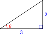
Solution
We start by using the Pythagorean Theorem to find the hypotenuse of the triangle.
\begin{equation*}
c^2 = 2^2 + 3^2 = 13
\end{equation*}
so \(c = \sqrt{13}\text{.}\) Thus, \(\cos \theta = \dfrac{3}{\sqrt{13}}\) and \(\sin \theta = \dfrac{2}{\sqrt{13}}\text{.}\) Now we can use these values in the double angle identity to find \(\sin 2\theta\text{.}\) \begin{align*} \sin 2\theta \amp = 2\sin \theta \cos \theta\\ \amp = 2(\dfrac{2}{\sqrt{13}})(\dfrac{3}{\sqrt{13}}) = \dfrac{12}{13}\\ \end{align*}
Checkpoint 8.14
Find \(\cos 2\theta\) and \(\tan 2\theta\) for the angle \(\theta\) shown in the previous example.
Answer
\(\cos 2\theta = \dfrac{5}{13},~~\tan 2\theta = \dfrac{12}{5}\)
We can work with algebraic expressions instead of numerical values for the trig ratios.
Example 8.15
Use the figure below to express \(\cos 2\phi\) in terms of \(a\text{.}\)
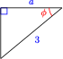
Solution
We use the Pythagorean Theorem to find an expression for the third side of the triangle. \begin{align*} a^2 + b^2 \amp = 3^2 \amp\amp \blert{\text{Solve for}~~b.} \\ b \amp = \sqrt{9 - a^2}\\ \end{align*} Now we can write expressions for the sine and cosine of \(\phi\text{.}\)
\begin{equation*}
\cos \phi = \dfrac{a}{3} ~~~~\text{and}~~~~\sin \phi = \dfrac{\sqrt{9 - a^2}}{3}
\end{equation*}
Finally, we substitute these expressions into the double angle identity. \begin{align*} \cos 2\phi \amp = \cos^2 \phi - \sin^2 \phi \\ \amp = (\dfrac{a}{3})^2 - (\dfrac{\sqrt{9 - a^2}}{3})^2\\ \amp = \dfrac{a^2}{9} - \dfrac{9 - a^2}{9} = \dfrac{a^2-9}{9}\\ \end{align*}
Checkpoint 8.16
For the triangle in the previous example, find expressions for \(\sin 2\phi\) and \(\tan 2\phi\text{.}\)
Answer
\(\sin 2\phi = \dfrac{2a\sqrt{9-a^2}}{9},~~\tan 2\phi = \dfrac{2a\sqrt{9-a^2}}{2a^2 - 9}\)
By using the Pythagorean identity, we can write the double angle formula for cosine in two alternate forms.
\begin{align*} \cos 2\theta \amp = \cos^2 \theta - \sin^2 \theta \\ \amp = \cos^2 \theta - (1-\cos^2 \theta)\\ \amp = 2\cos^2 \theta -1\\ \end{align*} \begin{align*} \cos 2\theta \amp = \cos^2 \theta - \sin^2 \theta \\ \amp = (1-\sin^2 \theta) - \sin^2 \theta\\ \amp = 1-2\sin^2 \theta \\ \end{align*}
Thus, we have three forms for the double angle formula for cosine, and we can use whichever form is most convenient for a particular problem.
Double Angle Identities for Cosine
\begin{align*} \cos 2\theta \amp = \cos^2 \theta - \sin^2 \theta \\ \amp = 2\cos^2 \theta -1\\ \amp = 1-2\sin^2 \theta\\ \end{align*}
Example 8.17
Find an expression for \(\cos 2\beta\) if you know that \(\cos \beta = \dfrac{x}{4}\text{.}\)
Solution
We use the identity \(\cos 2\theta = 2\cos^2 \theta -1\)
\begin{align*} \cos 2\beta \amp = 2\cos^2 \beta -1\\ \amp = 2(\dfrac{x}{4})^2 - 1 = \dfrac{2x^2}{16} - 1\\ \amp = \dfrac{2x^2 - 16}{16} = \dfrac{x^2 - 8}{8}\\ \end{align*}
Checkpoint 8.18
Find an expression for \(\cos 2\alpha\) if you know that \(\sin \alpha = \dfrac{6}{w}\text{.}\)
Answer
\(\dfrac{w^2 - 76}{w^2}\)
Subsection Solving Equations
If a trigonometric equation involves more than one angle, we use identities to rewrite the equation in terms of a single angle.
Example 8.19
Solve \(\sin 2x - \cos x\text{,}\) for \(0 \le x \le 2\pi\text{.}\)
Solution
We first use the double angle formula to write \(\sin 2x\) in terms of trig functions of \(x\) alone.
\begin{align*} \sin 2x -\cos x \amp = 0\\ 2\sin x \cos x -\cos x \amp = 0\\ \end{align*}
Once we have all the trig functions in terms of a single angle, we try to write the equation in terms of a single trig function. In this case, we can factor the left side to separate the trig functions.
\begin{align*} 2\sin x \cos x -\cos x \amp = 0\\ \cos x (2\sin x - 1) \amp = 0 \amp\amp \blert{\text{Set each factor equal to zero.}}\\ \cos x = 0 ~~~~~ 2\sin x - 1 \amp = 0 \amp\amp \blert{\text{Solve each equation.}}\\ \sin x \amp = \dfrac{1}{2} \\ x = \dfrac{\pi}{2},~\dfrac{3\pi}{2} ~~~~~~~~~~~~~ x\amp = \dfrac{\pi}{6},~\dfrac{5\pi}{6}\\ \end{align*}
There are four solutions, \(x = \dfrac{\pi}{2},~\dfrac{3\pi}{2},~\dfrac{\pi}{6},\) and \(\dfrac{5\pi}{6}\text{.}\)
Checkpoint 8.20
Solve \(\cos 2t = \cos t\text{,}\) for \(0 \le x \le 2\pi\text{.}\)
Answer
\(t = 0,~ \dfrac{2\pi}{3},~\dfrac{4\pi}{3}\)
Activity 8.2 Identities
I Sum of Angles Identities
- Is it true that \(\cos (\theta + \phi) = \cos \theta + \cos \phi\text{?}\) Try it for \(\theta = 60\degree\) and \(\phi = 45\degree\text{.}\)
- Recall the distributive law, \(a(b+c) = ab + ac\text{,}\) where the parentheses denote multiplication. Is the same law true when the parentheses denote a function? In other words, is it true that \(f(a+b) = f(a) + f(b)\text{?}\)
- In the expression \(\sin (\theta + \phi)\text{,}\) do the parentheses denote multiplication or the application of a function? Does the distributive law apply to \(\sin (\theta + \phi)\text{?}\) Do you think that \(\sin (\theta + \phi) = \sin \theta + \sin \phi\) is an identity?
- Look at the Sum of Angles Identities in this section. Make some observations that will help you memorize these formulas.
- Do you think you would have to memorize these formulas if the equation \(\sin (\theta + \phi) = \sin \theta + \sin \phi\) were an identity?
II Difference of Angles Identities, Tangent Identities
- Yikes! More formulas. Compare the Difference of Angles Identities with the Sum of Angles Identities. If you have memorized the Sum formulas, how can you also memorize the Difference formulas?
- Comment on the sign patterns in the Sum and Difference Identities for Tangent.
- Now let's use the formulas backwards: look at the expression below:\begin{equation*} \dfrac{\tan 285\degree - \tan 75\degree}{1 + \tan 285\degree \tan 75\degree} \end{equation*}Does it remind you of the left side of one of the six new identities? Use that identity to simplify the expression.
- Do the same thing for this expression:\begin{equation*} \sin 4t \cos 0.7 - \cos 4t \sin 0.7 \end{equation*}
- Now let's use the formulas backwards: look at the expression below:
III Double Angle Identities
- Is it true that \(\sin 2\theta = 2\sin \theta\text{?}\) Choose a value for \(\theta\) and try it. Sketch \(\theta\) and \(2\theta\) on a unit circle and show the sine of each.
- Is it true that \(\cos 2\theta = 2\cos \theta\text{?}\) Repeat part (a) for cosine.
- Substitute \(\alpha = \theta\) and \(\beta = \theta\) into the sum of angles formulas for sine, cosine, and tangent to derive the double angle formulas.
- Choose one of the three forms of the Double Angle Identity for Cosine. Use the Pythagorean Identity to convert from that form to each of the other two forms.
Subsection Algebra Refresher
Subsubsection Exercises
- Compute \(f(2),~ f(3)\text{,}\) and \(f(2+3)\text{.}\)
- For which of the following functions is it true that \(f(a+b) = f(a) + f(b)\) whenever the function values are defined?
1
\(f(x) = 3x+2\)2
\(f(x) = x^2\)3
\(f(x) = \sqrt{x}\)4
\(f(x) = \dfrac{1}{x}\)5
\(f(x) = \abs{x}\)6
\(f(x) = 2^x\)Subsubsection Answers to 8.1 Exercises
- \(\sin(60\degree + 30\degree)=1\text{,}\) but \(\sin 60\degree + \sin 30\degree = \dfrac{\sqrt{3}}{2} + \dfrac{1}{2}\)
- \(\dfrac{\sqrt{6}+\sqrt{2}}{4}\)
- \(\dfrac{17}{13\sqrt{2}} = \dfrac{17\sqrt{2}}{26}\)
- \(\dfrac{\sqrt{3}-1}{2\sqrt{2}} = \dfrac{\sqrt{6}-\sqrt{2}}{4}\)
- \(\dfrac{\sqrt{3}-1}{\sqrt{3}+1}\)
- \(\cos 2\theta = \dfrac{5}{13},~~\tan 2\theta = \dfrac{12}{5}\)
- \(\sin 2\phi = \dfrac{2a\sqrt{9-a^2}}{9},~~\tan 2\phi = \dfrac{2a\sqrt{9-a^2}}{2a^2 - 9}\)
- \(\dfrac{w^2 - 76}{w^2}\)
- \(t = 0,~ \dfrac{2\pi}{3},~\dfrac{4\pi}{3}\)
Subsubsection Algebra Refresher Answers
- 8, 11, 17
- Not true
- 4, 9, 25
- Not true
- \(\sqrt{2},~\sqrt{3},~\sqrt{5}\)
- Not true
- \(\dfrac{1}{2},~\dfrac{1}{3},~\dfrac{1}{5}\)
- Not true
- 2, 3, 5
- Not true
- 4, 8, 32
- Not true
Subsection Section 8.1 Summary
Subsubsection Concepts
- Identities are useful for changing from one form to another when solving equations, for simplifying expressions, and for finding exact values for trigonometric functions.
- it is not true in general that \(\cos (\alpha + \beta)\) is equal to \(\cos \alpha + \cos \beta\) for all angles \(\alpha\) and \(\beta\text{,}\) or that \(\sin (\alpha + \beta)\) is equal to \(\sin \alpha + \sin \beta\text{.}\)
Negative Angle Identities
\begin{equation*} \cos (-\theta) = \cos \theta \end{equation*}\begin{equation*} \sin (-\theta) = -\sin \theta \end{equation*}\begin{equation*} \tan (-\theta) = -\tan \theta \end{equation*}Sum and Difference of Angles Identities
\begin{equation*} \cos (\alpha + \beta) = \cos \alpha \cos \beta - \sin \alpha \sin \beta \end{equation*}\begin{equation*} \sin (\alpha + \beta) = \sin \alpha \cos \beta + \cos \alpha \sin \beta \end{equation*}\begin{equation*} \tan (\alpha + \beta) = \dfrac{\tan \alpha + \tan \beta}{1 - \tan \alpha \tan \beta} \end{equation*}\begin{equation*} \cos (\alpha - \beta) = \cos \alpha \cos \beta + \sin \alpha \sin \beta \end{equation*}\begin{equation*} \sin (\alpha - \beta) = \sin \alpha \cos \beta - \cos \alpha \sin \beta \end{equation*}\begin{equation*} \tan (\alpha - \beta) = \dfrac{\tan \alpha - \tan \beta}{1 + \tan \alpha \tan \beta} \end{equation*}Double Angle Identities
\begin{align*} \cos 2\theta \amp = \cos^2 \theta - \sin^2 \theta \amp\amp \sin 2\theta = 2\sin \theta \cos \theta\\ \amp = 2\cos^2 \theta -1 \amp\amp \tan 2\theta = \dfrac {2\tan \theta}{1-\tan^2 \theta}\\ \amp = 1-2\sin^2 \theta\\ \end{align*}
Subsubsection Study Questions
- Explain why \(f(a+b) - f(a) + f(b)\) is not a valid application of the distributive law.
- Delbert says that \(\sin(\theta + \dfrac{\pi}{6}) = \dfrac{1}{2} + \sin \theta\text{.}\) Is he correct? Explain.
- Francine says that \(\tan(\theta + \dfrac{\pi}{4})= \dfrac{1+\tan \theta}{1 - \tan \theta}\text{.}\) Is she correct? Explain.
- Provide an example to show that doubling an angle does not double its sine or cosine.
Subsubsection Skills
- Find trig values for the negative of an angle #1-6
- Verify or disprove possible formulas #7-12, 31-42, 73-76, 79-88
- Find exact values for trigonometric functions #13-24, 55-62
- Simplify or expand expressions #25-30, 43-54
- Solve equations #63-72
- Prove standard identities #77-78, 89-91
Subsection Homework 8-1
¶1
- Sketch an angle \(\alpha\) in standard position, with \(\dfrac{\pi}{2} \lt \alpha \lt \pi\text{.}\) Also sketch the angle \(-\alpha\text{.}\)
- Choose a point on the terminal side of \(\alpha\text{,}\) and show that the negative angle identities hold for \(\alpha\text{.}\)
Answer
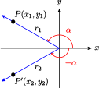
\(x_2=x_1\text{,}\) \(y_2=-y_1\text{,}\) and \(r_2=r_1\text{.}\) Thus, \(\cos(-\alpha)=\dfrac{x_2}{r_2} =\dfrac{x_1}{r_1}=\cos\alpha \text{,}\) \(\sin(-\alpha)=\dfrac{y_2}{r_2} =\dfrac{-y_1}{r_1}=-\sin\alpha \text{,}\) and \(\tan(-\alpha)=\dfrac{y_2}{x_2} =\dfrac{-y_1}{x_1}=-\tan\alpha \text{.}\)
2
- Sketch an angle \(\beta\) in standard position, with \(\pi \lt \beta \lt \dfrac{3\pi}{2}\text{.}\) Also sketch the angle \(-\beta\text{.}\)
- Choose a point on the terminal side of \(\beta\text{,}\) and show that the negative angle identities hold for \(\beta\text{.}\)
3
Given that \(\sin \dfrac{7\pi}{12} = \dfrac{\sqrt{2} + \sqrt{6}}{4}\text{,}\) find \(\sin \dfrac{-7\pi}{12}\text{.}\) Sketch both angles.
Answer
\(\dfrac{-(\sqrt{2} + \sqrt{6})}{4}\)
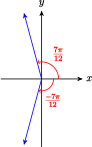
4
Given that \(\cos \dfrac{7\pi}{12} = \dfrac{\sqrt{2} - \sqrt{6}}{4}\text{,}\) find \(\cos \dfrac{-7\pi}{12}\text{.}\) Sketch both angles.
5
If \(\cos(2x-0.3)=0.24\) and \(\sin(2x-0.3) \lt 0\text{,}\) find \(\cos(0.3-2x)\) and \(\sin(0.3-2x)\text{.}\)
Answer
\(\cos(0.3-2x)=0.24\text{,}\) \(\sin(0.3-2x)=0.97\)
6
If \(\sin(1.5-\phi)=-0.28\) and \(\cos(1.5-\phi) \gt 0\text{,}\) find \(\sin(1.5-\phi)\) and \(\cos(1.5-\phi)\text{.}\)
7
Show that \(\cos(45\degree+45\degree)\) is not equal to \(\cos 45\degree + \cos 45\degree\text{.}\)
Answer
\(\cos(45\degree + 45\degree)=\cos(90\degree)=0\text{,}\) but \(\cos 45\degree +\cos 45\degree = \frac{1}{\sqrt{2}}+\frac{1}{\sqrt{2}}=\sqrt{2} \)
8
Show that \(\tan(60\degree-30\degree)\) is not equal to \(\tan 60\degree - \tan 30\degree\text{.}\)
9
Use your calculator to verify that \(\tan (87\degree-29\degree)\) is not equal to \(\tan 87\degree - \tan 29\degree\text{.}\)
Answer
\(\tan(87\degree -29\degree)\approx 1.600\text{,}\) but \(\tan 87\degree =\tan 29\degree \approx 18.527 \)
10
Use your calculator to verify that \(\cos (52\degree+64\degree)\) is not equal to \(\cos 52\degree + \cos 64\degree\text{.}\)
11
Use graphs to show that \(\sin(x-\dfrac{\pi}{6})\) is not equivalent to \(\sin x - \sin\dfrac{\pi}{6}\)
.
Answer
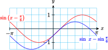
The curves are different.
12
Use graphs to show that \(\tan(x+\dfrac{\pi}{4})\) is not equivalent to \(\tan x + \tan\dfrac{\pi}{4}\)
.For Problems 13–24, find exact values for the trig ratios. (Do not use a calculator!)
13
Suppose \(\cos \alpha = \dfrac{3}{5},~ \sin \alpha = \dfrac{4}{5},~ \cos \beta = \dfrac{5}{13}\text{,}\) and \(\sin \beta = \dfrac{-12}{13}\text{.}\) Evaluate the following.
- \(\cos(\alpha + \beta)\)
- \(\sin(\alpha + \beta)\)
- \(\tan(\alpha + \beta)\)
Answer
- \(\dfrac{63}{65} \)
- \(\dfrac{-16}{65} \)
- \(\dfrac{-16}{63} \)
14
Suppose \(\cos \alpha = \dfrac{-2}{3},~ \sin \alpha = \dfrac{\sqrt{5}}{3},~ \cos \beta = \dfrac{\sqrt{3}}{2}\text{,}\) and \(\sin \beta = \dfrac{-1}{2}\text{.}\) Evaluate the following.
- \(\cos(\alpha - \beta)\)
- \(\sin(\alpha - \beta)\)
- \(\tan(\alpha - \beta)\)
15
If \(\tan t = \dfrac{3}{4}\) and \(\tan s = \dfrac{-7}{24}\text{,}\) find exact values for:
- \(\tan(s+t)\)
- \(\tan(s-t)\)
Answer
- \(\dfrac{44}{117} \)
- \(\dfrac{4}{3} \)
16
If \(\tan x = -3\) and \(\tan y = -5\text{,}\) find exact values for:
- \(\tan(x+y)\)
- \(\tan(x-y)\)
17
Suppose \(\cos \theta = \dfrac{15}{17}\) and \(\sin \phi = \dfrac{3}{5}\text{,}\) where \(\theta\) and \(\phi\) are in quadrant I. Evaluate the following.
- \(\cos(\theta + \phi)\)
- \(\tan(\theta - \phi)\)
Answer
- \(\dfrac{36}{85} \)
- \(\dfrac{-13}{84} \)
18
Suppose \(\cos \theta = \dfrac{15}{17}\text{,}\) where \(\theta\) is in quadrant IV, and \(\sin \phi = \dfrac{3}{5}\text{,}\) where \(\phi\) is in quadrant II. Evaluate the following.
- \(\sin(\theta - \phi)\)
- \(\tan(\theta + \phi)\)
19
If \(\sin \alpha = \dfrac{12}{13},~ \dfrac{\pi}{2} \lt\alpha \lt \pi\text{,}\) and \(\cos \beta = \dfrac{-3}{5},~ \pi \lt \beta \lt \dfrac{3\pi}{2}\text{,}\) find exact values for:
- \(\sin(\alpha + \beta)\)
- \(\cos(\alpha + \beta)\)
- \(\tan(\alpha + \beta)\)
- Sketch the angles \(\alpha, \beta\) and \(\alpha + \beta\text{.}\)
Answer
- \(\dfrac{-16}{65} \)
- \(\dfrac{63}{65} \)
- \(\dfrac{-16}{63} \)
- 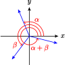
20
If \(\cos \alpha = \dfrac{3}{8},~ \dfrac{3\pi}{2} \lt\alpha \lt 2\pi\text{,}\) and \(\sin \beta = \dfrac{-1}{4},~ \pi \lt \beta \lt \dfrac{3\pi}{2}\text{,}\) find exact values for:
- \(\sin(\alpha - \beta)\)
- \(\cos(\alpha - \beta)\)
- \(\tan(\alpha - \beta)\)
- Sketch the angles \(\alpha, \beta\) and \(\alpha + \beta\text{.}\)
21
Find the exact values of \(\cos 15\degree\) and \(\tan 15\degree\text{.}\)
Answer
\(\cos 15\degree=\frac{\sqrt{6}+\sqrt{2}}{4} \text{,}\) \(\tan 15\degree = 2-\sqrt{3}\)
22
Find the exact values of \(\sin 165\degree\) and \(\tan 165\degree\text{.}\)
23
If \(\sin \theta = 0.2\) and \(\cos \theta \gt 0\text{,}\) find \(\sin (\theta + \dfrac{\pi}{3})\text{.}\)
Answer
\(\dfrac{6\sqrt{2}+1}{10}\)
24
If \(\cos \theta = 0.6\) and \(\sin \theta \lt 0\text{,}\) find \(\cos (\theta + \dfrac{3\pi}{4})\text{.}\)
For Problems 25–30, use the sum and difference formulas to expand each expression.
25
\(\sin (\theta - 270\degree)\)
Answer
\(\cos \theta\)
26
\(\cos(270\degree + \theta)\)27
\(\cos(t + \dfrac{\pi}{6})\)
Answer
\(\frac{\sqrt{3}}{2}\cos t -\frac{1}{2}\sin t \)
28
\(\sin (t - \dfrac{2\pi}{3})\)29
\(\tan(\beta - \dfrac{\pi}{6})\)
Answer
\(\frac{\sqrt{3}\tan\beta -1}{\sqrt{3}+\tan\beta} \)
30
\(\tan (\phi + \dfrac{\pi}{4})\)For Problems 31–34, use the unit circle to estimate trig values. Then verify with your calculator.
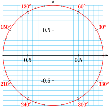
For Problems 35–38, verify that each statement is true.
35
\(\sin 90\degree = 2\sin 45\degree \cos 45\degree\)
Answer
\(1=2\left(\frac{1}{\sqrt{2}} \right)\left(\frac{1}{\sqrt{2}} \right) \)
36
\(\sin 60\degree = 2\sin 30\degree \cos 30\degree\)37
\(\cos 60\degree = \cos^2 30\degree - \sin^2 30\degree\)
Answer
\(\frac{1}{2} =\left(\frac{\sqrt{3}}{2} \right)^2 - \left(\frac{1}{2} \right)^2 \)
38
\(\tan 60\degree = \dfrac{2\tan 30\degree}{1 - \tan^2 30\degree}\)In Problems 39–42, is the statement true or false? Explain your answer.
39
If \(\cos \alpha = 0.32\text{,}\) then \(\cos 2\alpha = 2(0.32) = 0.64\text{.}\)
Answer
False, but \(\cos 2\alpha=2(0.32)^2-1 \)
40
If \(\cos 2\beta = 0.86\text{,}\) then \(\cos \beta = 0.43\text{,}\) so \(\beta = \cos^{-1}(0.43)\text{.}\)
41
If \(\sin 2\theta = h\text{,}\) then \(\sin \theta = \dfrac{h}{2}\text{,}\) so \(\theta = \sin^{-1}\left(\dfrac{h}{2}\right)\text{.}\)
Answer
False, but \(2\theta = \sin^{-1}(h) \)
42
If \(\cos \phi = r\text{,}\) then \(\cos 2\phi = 2r\text{.}\)
For Problems 43–54, use the double angle identities to simplify the expression.
43
\(2\sin 34\degree \cos 34\degree\)
Answer
\(\sin 68\degree\)
44
\(\cos^2 \dfrac{\pi}{10} - \sin^2 \dfrac{\pi}{10}\)45
\(1 - 2\sin^2 \dfrac{\pi}{16}\)
Answer
\(\cos\frac{\pi}{8} \)
46
\(2\cos^2 18\degree - 1\)47
\(\cos^2 3\theta - \sin^2 3\theta\)
Answer
\(\cos 6\theta\)
48
\(2\sin 2\alpha \cos 2\alpha\)49
\(2\sin 5t \cos 5t\)
Answer
\(\sin 10t\)
50
\(\cos^2 4w - \sin^2 4w\)51
\(\dfrac{2\tan 64\degree}{1- \tan^2 64\degree}\)
Answer
\(\tan 128\degree\)
52
\(\dfrac{2\tan \dfrac{\pi}{3}}{1- \tan^2 \dfrac{\pi}{3}}\)53
\(2\cos^2 2\beta - 1\)
Answer
\(\cos 4\beta\)
54
\(1 - 2\sin^2 6s\)For Problems 55–58, use the figures to find the trigonometric ratios.

55
- \(\sin \alpha\)
- \(\cos \alpha\)
- \(\tan \alpha\)
- \(\sin 2\alpha\)
- \(\cos 2\alpha\)
- \(\tan 2\alpha\)
Answer
- \(\dfrac{5}{6} \)
- \(\dfrac{\sqrt{11}}{6} \)
- \(\dfrac{5}{\sqrt{11}} \)
- \(\dfrac{5\sqrt{11}}{18} \)
- \(\dfrac{-7}{18} \)
- \(\dfrac{-5\sqrt{11}}{7} \)
56
- \(\sin \beta\)
- \(\cos \beta\)
- \(\tan \beta\)
- \(\sin 2\beta\)
- \(\cos 2\beta\)
- \(\tan 2\beta\)
57
- \(\sin s\)
- \(\cos s\)
- \(\tan s\)
- \(\sin s\)
- \(\cos s\)
- \(\tan s\)
Answer
- \(\dfrac{1}{w^2+1} \)
- \(\dfrac{w}{w^2+1} \)
- \(\dfrac{1}{w} \)
- \(\dfrac{2w}{w^2+1} \)
- \(\dfrac{w^2 -1}{w^2+1} \)
- \(\dfrac{2w}{w^2-1} \)
58
- \(\sin t\)
- \(\cos t\)
- \(\tan t\)
- \(\sin t\)
- \(\cos t\)
- \(\tan t\)
59
Suppose \(\cos \theta = \dfrac{12}{13}\) and \(\dfrac{3\pi}{2} \lt \theta \lt 2\pi\text{.}\) Compute exact values for:
- \(\sin \theta\)
- \(\sin 2\theta\)
- \(\cos 2\theta\)
- \(\tan 2\theta\)
- Sketch the angles \(\theta\) and \(2\theta\text{.}\)
Answer
- \(\dfrac{-5}{13} \)
- \(\dfrac{-120}{169} \)
- \(\dfrac{119}{169} \)
- \(\dfrac{-120}{119} \)
- 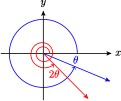
60
Suppose \(\sin \phi = \dfrac{5}{6}\) and \(\dfrac{\pi}{2} \lt \phi \lt \pi\text{.}\) Compute exact values for:
- \(\cos \phi\)
- \(\sin 2\phi\)
- \(\cos 2\phi\)
- \(\tan 2\phi\)
- Sketch the angles \(\phi\) and \(2\phi\text{.}\)
61
If \(\tan u = -4\) and \(270\degree \lt u \lt 360\degree\text{,}\) find exact values for:
- \(\tan 2u\)
- \(\cos 2u\)
- \(\sin 2u\)
Answer
\(\dfrac{8}{15} \)
\(\dfrac{-15}{17} \)
\(\dfrac{-8}{17} \)
62
If \(\tan v = \dfrac{2}{3}\) and \(180\degree \lt u \lt 270\degree\text{,}\) find exact values for:
- \(\tan 2v\)
- \(\cos 2v\)
- \(\sin 2v\)
For Problems 63–72,
- Use identities to rewrite the equation in terms of a single angle.
- Solve. Give exact solutions between \(0\) and \(2\pi\text{.}\)
63
\(\sin 2\theta + \sqrt{2} \cos \theta = 0\)
Answer
\(2\sin\theta \,\cos\theta +\sqrt{2}\cos\theta=0 \)
\(\dfrac{\pi}{2} \text{,}\) \(\dfrac{5\pi}{4} \text{,}\) \(\dfrac{3\pi}{2} \text{,}\) \(\dfrac{7\pi}{4} \)
64
\(\sin 2\alpha \sin \alpha =\cos \alpha\)65
\(\cos 2t -5\cos t + 3 = 0\)
Answer
\(2\cos^2 t -5\cos t +2=0 \)
\(\dfrac{\pi}{3} \text{,}\) \(\dfrac{5\pi}{3} \)
66
\(\cos 2x + 3\sin x = 2\)67
\(\tan 2\beta + 2\sin \beta = 0\)
Answer
\(\frac{2\tan\beta}{1-\tan^2\beta}+2\sin\beta=0 \)
\(0,\ \dfrac{\pi}{3}, \,\pi,\, \dfrac{5\pi}{3} \)
68
\(\tan 2z - 2\cos z = 0\)69
\(3\cos \phi - \sin \left(\dfrac{\pi}{2} - \phi\right) = \sqrt{3}\)
Answer
\(2\cos\phi - \cos \phi=\sqrt{3} \)
\(\dfrac{\pi}{6}, \, \dfrac{11\pi}{6} \)
70
\(\sin w + \cos(\dfrac{\pi}{2} - w) = 1\)71
\(\sin 2\phi \cos \phi + \cos 2\phi \sin \phi = 1 \)
Answer
\(\sin 3\phi =1\)
\(\dfrac{\pi}{6}, \, \dfrac{5\pi}{6}, \, \dfrac{3\pi}{2} \)
72
\(\cos \theta \cos 3\theta + \sin \theta \sin 3\theta = \dfrac{\sqrt{2}}{2}\)73
Use the sum of angles formulas for sine and cosine to derive a formula for each expression. Then use graphs to verify your formula.
- \(\cos (\theta + 90\degree)\)
- \(\sin (\theta + 90\degree)\)
Answer
- \(\cos (\theta + 90\degree)=-\sin\theta \)
- \(\sin (\theta + 90\degree)=\cos\theta\)
74
Use the sum of angles formulas for sine and cosine to derive a formula for each expression. Then use graphs to verify your formula.
- \(\cos (\theta + \pi)\)
- \(\sin (\theta + \pi)\)
75
Use the difference of angles formulas for sine and cosine to prove that:
- \(\cos \left(\dfrac{\pi}{2} -\theta\right) = \sin \theta\)
- \(\sin \left(\dfrac{\pi}{2} -\theta\right) = \cos \theta\)
Answer
- \(\cos \left(\dfrac{\pi}{2} -\theta\right) = \cos\frac{\pi}{2} \cos\theta + \sin \frac{\pi}{2}\sin\theta = \sin \theta\)
- \(\sin \left(\dfrac{\pi}{2} -\theta\right) = \sin\frac{\pi}{2} \cos\theta - \cos \frac{\pi}{2}\sin\theta= \cos \theta\)
76
Use the difference of angles formulas for sine and cosine to derive formulas for:
- \(\cos (\theta - \dfrac{\pi}{2})\)
- \(\sin (\theta - \dfrac{\pi}{2})\)
77
Prove the double angle identity \(\sin 2\theta = 2\sin \theta \cos\theta\text{.}\) (Hint: Start with the sum of angles formula for sine and replace both \(\alpha\) and \(\beta\) by \(\theta\text{.}\))
Answer
\(\sin2\theta =\sin(\theta + \theta) = \sin\theta\cos\theta + \sin\theta\cos\theta = 2\sin\theta\cos\theta \)
78
Prove the double angle identity \(\cos 2\theta = \cos^2 \theta - \sin^2 \theta\text{.}\) (Hint: Start with the sum of angles formula for sine and replace both \(\alpha\) and \(\beta\) by \(\theta\text{.}\))
For Problems 79–88,
- Use graphs to decide if the equation is an identity.
- If the equation is not an identity, find a value of the variable that makes the equation false.
79
\(\sin \left(\dfrac{\pi}{2} + \beta\right) = 1 + \sin \beta\)
Answer
Not an identity.
\(\beta=\pi\) (many answers possible)
80
\(\cos \left(\dfrac{\pi}{3} - \beta\right) =\cos \left(\beta - \dfrac{\pi}{3}\right)\)81
\(\sin(A+180\degree) = -\sin A\)
Answer
Identity
82
\(\tan \theta + \tan(-\theta) = 0\)83
\(\cos 4\theta = 4\cos \theta\)
Answer
Not an identity.
\(\theta=0\) (many answers possible)
84
\(\cos\left(\phi + \dfrac{\pi}{3}\right)= \dfrac{1}{2} + \cos \phi\)85
\(\sin\left(x + \dfrac{\pi}{4}\right) = \dfrac{\sqrt{2}}{2}(\sin x + \cos x)\)
Answer
Identity
86
\(2\cos\left(x - \dfrac{\pi}{6}\right) = \sin x + \sqrt{3}\cos x\)87
\(\sin\left(x - \dfrac{\pi}{3}\right) + \cos \left(x + \dfrac{\pi}{6}\right)= 0\)
Answer
Identity
88
\(\cos 2x = (\cos x + \sin x)(\cos x - \sin x) \)Problems 89 and 90 verify the addition and subtraction formulas for acute angles.
89
The figure below shows a right triangle inscribed in a rectangle.
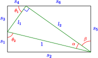
- Label the legs \(l_1\) and \(l_2\) of the right triangle with their lengths.
- Explain why \(\theta_1 = \beta\) and \(\theta_2 = \alpha +\beta\text{.}\) Label the diagram with these angles.
- Label the legs \(s_1\) and \(s_2\) of the bottom triangle with their lengths.
- Label the legs \(s_3\) and \(s_4\) of the top left triangle with their lengths.
- Label the legs \(s_5\) and \(s_6\) of the top right triangle with their lengths.
- Use the fact that the opposite sides of a rectangle are equal to state the addition formulas for sine and cosine.
Answer
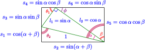
\(l_1=\sin\alpha, \, l_2=\cos\alpha \)
\(\theta_1\) and \(\beta\) are both complements of \(\phi\text{;}\) \(\theta_2\) and \(\alpha+\beta\) are both alternate interior angles
\(s_1=\cos(\alpha+\beta) \text{,}\) \(s_2=\sin(\alpha+\beta) \)
\(s_3=\sin\alpha\sin\beta \text{,}\) \(s_4=\sin\alpha\cos\beta \)
\(s_5=\cos\alpha\cos\beta \text{,}\) \(s_6=\cos\alpha\sin\beta \)
\(\sin(\alpha+\beta) = \sin\alpha\cos\beta +\cos\alpha\sin\beta \text{,}\) \(\cos(\alpha+\beta) = \cos\alpha\cos\beta +\sin\alpha\sin\beta \)
90
The figure below shows a right triangle inscribed in a rectangle.
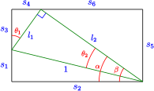
- Label the legs \(l_1\) and \(l_2\) of the right triangle with their lengths.
- Explain why \(\theta_1 = \beta\) and \(\theta_2 = \alpha -\beta\text{.}\) Label the diagram with these angles.
- Label the legs \(s_1\) and \(s_2\) of the bottom triangle with their lengths.
- Label the legs \(s_3\) and \(s_4\) of the top left triangle with their lengths.
- Label the legs \(s_5\) and \(s_6\) of the top right triangle with their lengths.
- Use the fact that the opposite sides of a rectangle are equal to state the subtraction formulas for sine and cosine.
91
Follow the steps to prove the difference of angles formula for cosine,
\begin{equation*}
\cos(\alpha - \beta) = \cos\alpha \cos\beta + \sin\alpha \sin\beta
\end{equation*}
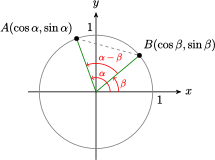
- Write an expression for \((AB)^2\text{,}\) the square of the distance between the points \(A\) and \(B\text{,}\) using the Law of Cosines for \(\triangle AOB\text{.}\)
- Write another expression for \((AB)^2\) using the distance formula and the coordinates of \(A\) and \(B\text{.}\)
- Equate the two expressions for \((AB)^2\) you obtained in (a) and (b). Simplify the equation to obtain \(\cos(\alpha - \beta) = \cos\alpha \cos\beta + \sin\alpha \sin\beta\text{.}\)
Answer
\((AB)^2=2-2\cos(\alpha-\beta)\)
\((AB)^2=(\cos\alpha-\cos\beta)^2 + (\sin\alpha - \sin\beta)^2 \)
\(\begin{aligned} 2-2\cos(\alpha-\beta)\amp = (\cos\alpha-\cos\beta)^2 + (\sin\alpha - \sin\beta)^2 \\ 2-2\cos(\alpha-\beta)\amp = \cos^2 -2\cos\alpha\cos\beta + \cos^2 \beta + \,\\ \amp\hphantom{000000000} +\sin^2 \alpha - 2\sin\alpha\sin\beta + \sin^2\beta \\ 2-2\cos(\alpha-\beta)\amp = 1+1 - 2(\cos\alpha \cos\beta - \sin\alpha\sin\beta) \\ -2\cos(\alpha-\beta)\amp = -2(\cos\alpha \cos\beta - \sin\alpha\sin\beta) \\ \cos(\alpha-\beta)\amp = \cos\alpha \cos\beta - \sin\alpha\sin\beta) \end{aligned}\)